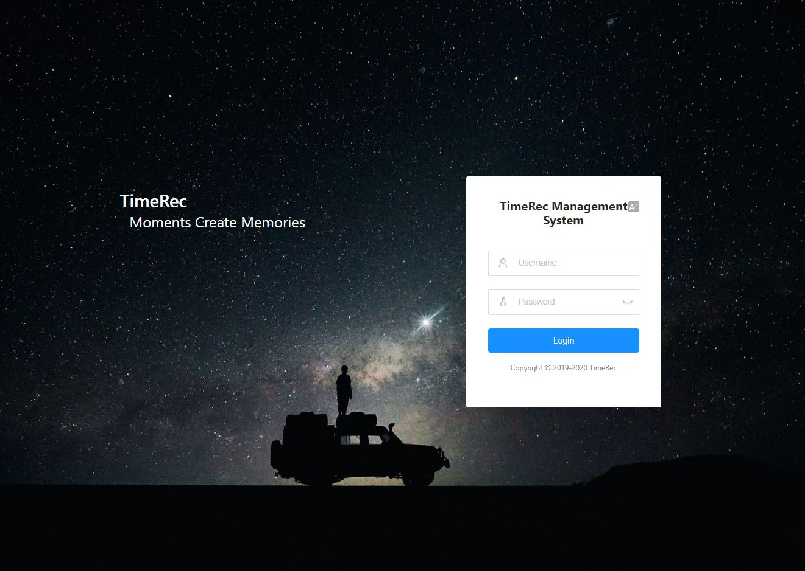
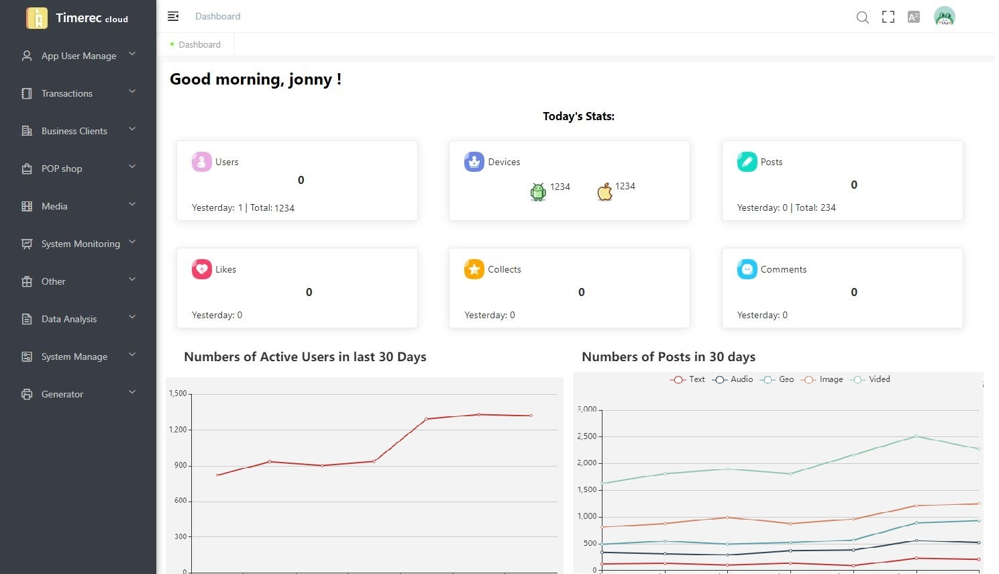

TimeRec Management System
A low-coupling system built using
Java Spring MVC + MyBatis Framework:
Spring Cloud Greenwich.SR3, OAuth2, Alibaba cloud services
the front-end is developed using
Vue.js with Element-ui and Apache Echarts.
Login page

Home page

The system has the following characteristics:
-
Front-end and back-end separation architecture, client and server pure
Token interaction;
-
The authentication server is separated from the resource server to
facilitate access to its own microservice system;
-
Microservice protection, the resources requested by the client can only be
obtained through the microservice gateway;
-
Integrate Spring Boot Admin to monitor microservices in multiple
dimensions;
-
Integrate Nacos service governance and centralized configuration
management;
- The gateway integrates Sentinel flow control;
-
Front-end and back-end request parameter verification, Excel import and
export, code generator.
-
Using MyBatis instead of JDBC to access MySQL databases with quartz
automatic scheduling analysis data in the server and integrate Apache
Echart for data visulisation